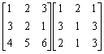
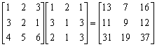

三階伴隨矩陣/逆矩陣/行列式及矩陣乘法
更新日期: 2010年4月22日
這個程式將兩個程式(三階矩陣乘法及三階隨矩陣/逆矩陣及行列式(I)合併為一，所以可以節省一個程式位置，合併後程式總長度亦略為節省一些。
程式需要在 REG Lin 模式下執行，因此在選擇新程式位置後，按 5 1 選用REG Lin模式。
注意: 藍色的英文字為統計模式中的變數(Σx 按 Shift 1 2，n 按 shift 1 3 ，Σy 按 Shift 1 → 2，Σxy 按 Shift 1 → 3)，FreqOn 按 Shift MODE ← ← 1。
程式(200 bytes)
FreqOn: ?→M: ?→A: ; A - 3 DT: ?→B: B - 1 DT:
?→C: 1 , C DT: ?→D: 0 , D - C DT: ?→A: ?→B:
?→C: ?→D: ?→X: If M: Then nAX + DΣxyΣy +
ΣxBC - nDB - ΣxΣyX - ΣxyCA◢ XA - BD◢
ΣxyD - ΣxX◢ ΣxB - ΣxyA◢ BC - ΣyX◢ nX - ΣxyC◢
ΣxyΣy - nB◢ ΣyD - AC◢ ΣxC - nD◢ nA - ΣxΣy:
Else X ; 0 DT: While 1: ?→X: ?→Y: ?→M:
Xn + YΣx + MΣxy◢ XΣy + YA + MB◢ ; 0 DT:
XC + YD + MAns◢ WhileEnd
例題1: 計算下列矩陣的乘積:

按 Prog 1 再按 0 EXE (0代表計算三階矩陣乘法)
1 EXE 2 EXE 3 EXE 3 EXE 2 EXE 1 EXE 4 EXE 5 EXE 6 EXE
(第一個矩陣，由左至右，上至下輸入)
1 EXE 3 EXE 2 EXE (輸入第二個矩陣，第一欄的數據)
(顯示13) EXE (顯示11) EXE (顯示31，這三個數值為答案的第一欄)
EXE 2 EXE 1 EXE 1 EXE (輸入第二個矩陣，第二欄的數據)
(顯示7) EXE (顯示9) EXE (顯示19，這三個數值為答案的第二欄)
EXE 1 EXE 3 EXE 3 EXE (輸入第二個矩陣，第三欄的數據)
(顯示16) EXE (顯示12) EXE (顯示37，這三個數值為答案的第三欄)
所以:

計算完結後，請按AC 終止程式，按 MODE 1返回正常模式。
例題2: 計算下列矩陣的伴隨矩陣及逆矩陣。
按 Prog 1 再按 1 EXE (1代表計算三階伴隨矩陣及行列式)
2 EXE 1 EXE 3 EXE 7 EXE 4 EXE 6 EXE 8 EXE 9 EXE 7 EXE (顯示行列式的值為40)
EXE (顯示 -26) EXE (顯示 20) EXE (顯示 -6)
EXE (顯示 -1) EXE (顯示 -10) EXE (顯示 9)
EXE (顯示 31) EXE (顯示 -10) EXE (顯示 1)
因此，


計算完結後，請按Mode 1返回正常模式。
程式限制:計算矩陣乘法時，輸入的數據絶對值必須為小於100000的整數，若果望計算矩陣乘法(準確版)可以輸入小數，請使附錄的第二個程式，但程式會較長。
返回 CASIO fx-50FH、fx-3650P II、fx-50FH II及fx-50F PLUS 程式集
舊版程式:
程式編寫日期: 2007年10月17日 更新日期: 2008年2月9日
程式限制: 計算矩陣乘法時，輸入的數據絶對值必須為小於100000的整數，若果望計算矩陣乘法(準確版)可以輸入小數，請使用第二個程式，但程式會較長。
第一個程式(221 bytes)
ClrStat: ?→M: ?→A: A-1 DT: ?→B: 1 , B DT:
?→C: 0 , C - Σy DT: ?→A: ?→B: ?→C: ?→D: ?→X:
?→Y: M => Goto 0: B + E - 6C→B: Y ; 0 DT: Lbl 1:
?→C: ?→Y: ?→M: ΣxC + ΣxyY + ΣyM◢ Fix 0:
Rnd( B: Norm 1: CA + Y Ans + E 6M(B - Ans◢ ; 0 DT:
DC + YX + M Ans◢ Goto 1: Lbl 0: ΣxBY + AXΣy +
DΣxyC - BDΣy - XCΣx - ΣxyAY◢ BY - CX◢
ΣyX - ΣxyY◢ ΣxyC - ΣyB◢ CD - AY◢ ΣxY - ΣyD◢
ΣyA - ΣxC◢ AX - BD◢ ΣxyD - ΣxX◢ ΣxB - ΣxyA
第二個程式(計算矩陣乘法時可輸入小數，245 bytes)
ClrStat: ?→M: -1 DT: ?→A: 1 , A DT: ?→B: B , 0 DT: ?→C:
0 , C - Σy DT: ?→A: ?→B: ?→Y: ?→X: ?→C: ?→D: M => Goto 0:
E 60D→D: E - 60Y , X ; 0 DT: Lbl 1: ?→X: ?→M: ?→Y:
XΣxy + MΣx +YΣy◢ ; 0 DT: XA + MB + E 60AnsY◢
MC + E - 60DY→M: Σy→Y: ; 1 DT: Σy - Y→Y: YX +M◢ ; -1 DT:
Goto 1: Lbl 0: ΣxyBD - CYΣxy + ACΣy + YΣxX - BXΣy - ADΣx◢
BD - YC◢ ΣyC - ΣxD◢ ΣxY - ΣyB◢ XY - AD◢ ΣxyD - ΣyX◢
ΣyA - ΣxyY◢ AC - BX◢ ΣxX - ΣxyC◢ ΣxyB - ΣxA